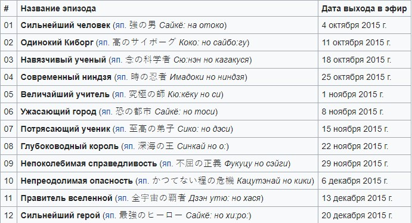
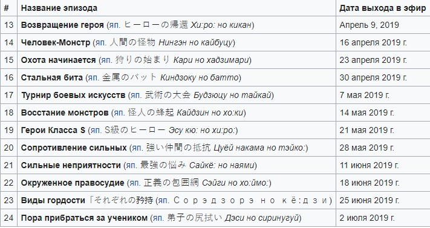
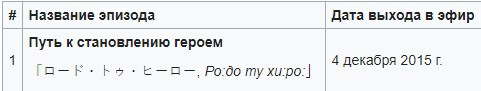
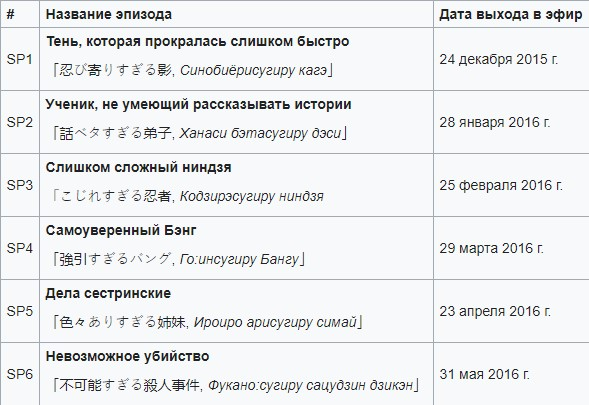
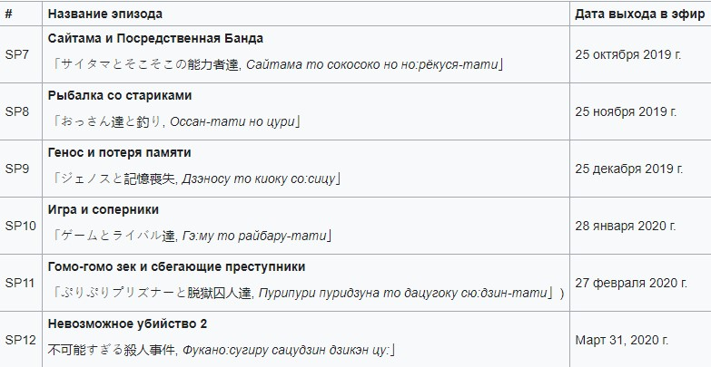

One Punch-Man (яп. ワンパンマン Ванпанман, «Ванпанчмен», букв.«Человек одного удара») — японский веб-комикс, созданный мангакой под псевдонимом ONE, который публикуется в свободном доступе в интернете с 2009 года[1]. В 2012 году был начат выпуск работы в формате цифровой манги с иллюстрациями Юсукэ Мураты под руководством ONE[2]. Манга лицензирована для издания в России издательством «Азбука-Аттикус»[3]. Общий выпуск манги только в Японии в 2017 году превысил 14 миллионов экземпляров[4]. С октября по декабрь 2015 года на различных телеканалах Японии транслировалась аниме-адаптация манги, подготовленная студией Madhouse[5][6]. В конце 2016 года было объявлено о выпуске второго сезона сериала[7], премьера которого состоялась только 9 апреля 2019 года[8]. На сей раз выпускающей мультипликационной студией выступила J.C.Staff[9].
На неназванной, похожей на Землю, планете мощные монстры и злодеи таинственно появляются и вызывают катастрофы. Чтобы бороться с ними, меценаты три года назад создали Ассоциацию героев. Каждый из членов Ассоциации героев ранжируется от класса C до класса S, в зависимости от своей репутации и способностей.Главный герой произведения — бывший клерк по имени Сайтама, который совершает героические поступки ради собственного развлечения. Он с детства мечтал стать супергероем, и три года назад начал свои тренировки, которые довели его до того, что ныне он может одолеть любого соперника одним ударом. Несмотря на свои подвиги Сайтама не афишировал их и долгое время оставался неизвестным обществу. Обретя в качестве ученика юного киборга Геноса, Сайтама решается вступить в Ассоциацию героев, где, пройдя с рекордами все испытания, но завалив письменную часть, попадает в C-класс реестра героев. Так получается, что большинство героев, что знакомится с Сайтамой, смотрят на него сверху вниз, не веря в то, что он на самом деле сильнее любого героя Ассоциации, но те, кто узнают его ближе, начинают уважать его невероятную силу и скромность. Постепенно имя Сайтамы обретает некую известность, однако общество по-прежнему отказывается признавать его заслуги и даже подвергает героя критике за уничтоженные в ходе битв городские строения. Несмотря на это Сайтама продолжил своё участие в Ассоциации героев и был зачислен в B-класс.После атаки инопланетян, корабль которых был уничтожен Сайтамой, Ассоциация героев получила дополнительное финансирование и расширила собственное влияние. Монстры, недовольные усилением Ассоциации, создали собственную Ассоциацию монстров, которая начала организованную борьбу с супергероями.
Сайтама (яп. サイタマ), имя в Ассоциации героев «Лысый Плащ» (яп. ハゲマント Хагэманто) — главный герой, наделён невзрачной внешностью. Ему всего лишь 25 лет. С 22 лет тренировался столь усердно, что обрёл колоссальную физическую силу и облысел. Живёт в заброшенной части города Z, жители которого покинули этот район из-за частого появления в нём сильных монстров.
Генос (яп. ジェノス Дзэносу) (имя в Ассоциации героев — «Кибердемон» (яп. 鬼サイボーグ Они Саибо:гу)) — 19-летний юноша-киборг. Одержим идеей мести таинственному киборгу, который уничтожил его городок и убил всех родных. Постоянно ищет пути стать сильнее, и ради этого готов на все. Всё тело, кроме мозга, является механическим. После того, как Генос увидел мощь Сайтамы, он решил стать его учеником и переехал в дом к своему новому учителю. После зачисления вместе с Сайтамой в Ассоциацию героев сразу же был принят в S-класс.
Бэнг (яп. バング Бангу) (имя в Ассоциации героев — «Серебряный Клык» (яп. シルバーファング Сируба: Фангу)) — герой S-класса и третий из сильнейших в реестре героев. Пожилой герой, владеющий техникой боевых искусств на высшем уровне. Имеет собственное додзё, которое лишилось практически всех учеников после инцидента с Гаро. Признаёт Сайтаму сильнейшим, из когда-либо виденных им людей, и желает взять его в ученики.
«Кинг» (яп. キング Кингу) — герой S-класса и седьмой из сильнейших в реестре героев. На самом деле является отаку, который пугается любой экстремальной ситуации. Во время этих моментов у Кинга происходит учащение сердцебиения, которое ошибочно воспринимается окружающими как готовность к сражению. Попал в реестр героев из-за того, что часто оказывался рядом с местом уничтожения монстров, однако не имеет никаких способностей. Сблизился с Сайтамой и нашёл с ним общий интерес к видеоиграм.
Гаро (яп. ガロウ Гаро:) — лучший ученик Бэнга, изгнанный им за инцидент с избиением почти всех его учеников, вследствие которого большинство покинуло додзё. После этого он начал охоту на представителей Ассоциации героев и объявил себя «убийцей героев». Ассоциация монстров пыталась завербовать Гаро, однако тот отказался убивать заложников и стал врагом сразу для обеих организаций.





25 июня 2019 года было объявлено о выходе видеоигры One Punch Man: A Hero Nobody Knows, которая будет доступна на PlayStation 4, Xbox One, и ПК; трейлер вышел в тот же день[10].
Манга и аниме-сериал «Ванпанчмен» были крайне положительно приняты критиками. Ксения Аташева из журнала «Мир фантастики» отмечала, что сюжет произведения отлично высмеивает различные супергеройские клише[11]. Особенно обозреватель выделяла при этом получившийся образ Сайтамы, который комично смотрится благодаря отстранённой реакции на пафосные речи злодеев[11]. Также был отмечен контраст в изображении боевых и повседневных сцен: первые были «старательно прорисованы в лучших традициях жанра, с динамичными ракурсами и предельно серьёзными выражениями на реалистичных лицах героев», в то время как вторые были выполнены в нарочито простой карикатурной стилистике[11]. Ребекка Сильверман из интернет-портала Anime News Network отмечала очень интересный подход мангак к дизайну противников Сайтамы, детализацию фоновых изображений и юмор работы, изобилующий абсурдными и пародийными элементами[12].Другой обозреватель Anime News Network Джейкоб Чепмен назвал первый сезон аниме-адаптации «безупречной комедией о неизбежной экзистенциальной тоске», которая несмотря на «глупую предпосылку заключала в себе множество сильных эмоций» и заставляла зрителя сопереживать Сайтаме в его желании встретиться с действительно серьёзным противником[13]. На взгляд Чепмена, первый сезон сериала «Ванпанчмен» являлся одним из лучших аниме осени 2015 года[13]. В этом мнении критик был поддержан своими коллегами по порталу, утверждавшими, что сериалы подобного уровня появляются далеко не в каждом сезоне[13].